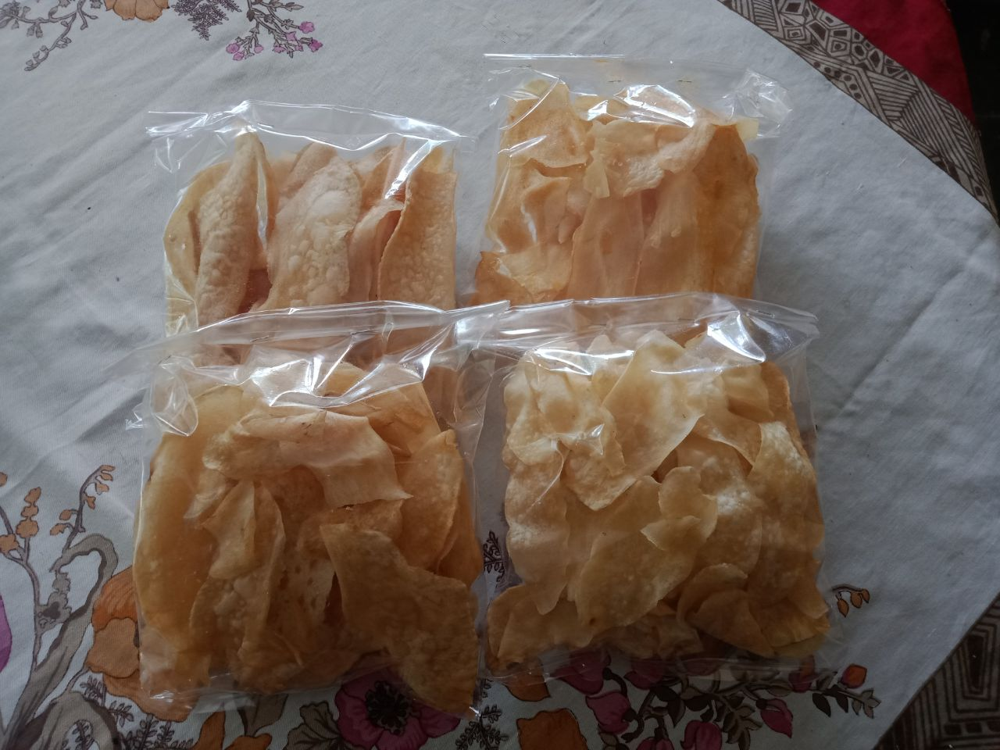

UMKM
Keripik Kaca
Keripik Kaca adalah cemilan berbahan dasar singkong.Sale
Sale adalah cemilan dari bahan dasar pisang.
Sotong
Sotong adalah cemilan dari bahan dasar terigu dan ikan.Keripik Pepaya
Keripik pepaya adalah cemilan dari bahan dasar pepaya.Opak
Opak adalah cemilan dari bahan dasar tepung Ketan.
